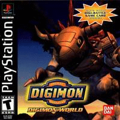

Digimon World

Digimon World é um jogo eletrônico do gênero RPG de 1999 desenvolvido pela Bandai Entertainment Company. É o primeiro jogo da subserie World, que faz parte da série Digimon, e consequentemente da franquia de bichinhos virtuais da Bandai. Foi lançado para PlayStation no Japão em janeiro de 1999, na América do Norte em 2000 e, na Europa, em 2001. Uma versão para Microsoft Windows foi lançada em 27 de abril de 2002 na Coréia do Sul.